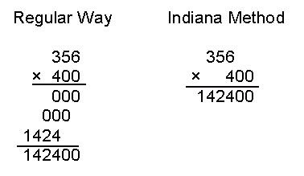
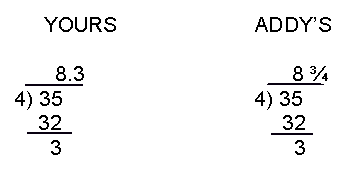

During the 1991-92 school year, my newsletter, "Trotter Math" News, carried a special feature: its own advice column. It was called "DEAR ADDY". And here is how things went for that year...
DEAR ADDY [August 1991] No, that didn't say "Dear Abby"; it said "Dear Addy". (ADDY for addition, the first number operation one learns in elementary school.) So, here is your advice column, for those of you who have a "math problem", and would like to have profes- sional help. Send your letters to Mr. Trotter, and I'll try to answer them. You may submit them anonymously if you wish. But, please no homework problems. (I wouldn't be able to reply in time anyway to do much good. Ha!) Here's our first letter--- Dear Addy, My teacher says it would be a good idea to use the "Indiana Method" in multiplying numbers. But I don't remember what it's all about. Can you help? Molly Multiply Dear Molly, Yes, I've heard of the "Indiana Method"; it's a good idea. Let's use an example: So you see the Indiana style just sets the extra zeros off to the side, and brings them down before multiplying by the remaining digits. It saves time and space, and is lots neater, don't you agree?[September 1991] Dear Addy, My teacher says he wants to see all my scratchwork on my homework and tests. And even more he wants it neatly done. I don't think he's being fair; I don't want to be bothered. What do you say? Scratchy Sam Dear Scratchy, I understand that many people don't want others to see their scratchwork. Perhaps they feel bad that they couldn't do some calculations in their head, for example. But I think your teacher just wants you to be more careful in all your work. Afterall, you should do everything possible to maximize your grade on a test. If you work carelessly (this often means sloppily) and rapidly, you will often miss a problem that you might have done cor- rectly with a little more care. Remember the old saying: "Haste makes waste." Also if you leave your scratchwork, your teacher can analyze your mistakes more easily in order to help you. And don't forget that maybe he'll give you some partial credit for trying! [October 1991] Dear Addy, I have been having a lot of trouble lately with long division. I keep getting wrong answers on my homework and tests (see one of my examples below). Can you help me? Dizzy Divider Dear Dizzy, Yes, I can see you are making a common error that also many of your friends are making. (So you are not alone.) Look at your example and compare it with the correct way:  You see, you are merely placing your remainder in the quotient as a "decimal". There are three basic ways to give a division's answer: with remainder, mixed number, and decimal. I gave the mixed number form above; the other two for that problem are "8 r3" and "8.75". The trouble is that you are confusing the "remainder" form with the "decimal" one. Each form has its best use time. If your problem was "How many 4-person relay teams could be formed with 35 runners?", the remainder style says "8 teams, with 3 runners left over". But, if you were asked to share 35 candy bars among 4 persons, the mixed number style (8 3/4) is the best way to give the answer. The decimal style is more often used in scientific areas or similar measurements. My advice: when it's "just a plain division" problem, use the mixed number form. (Here's wishing you "dandy dividing".)[November 1991] Dear Addy, I hate fractions! I just never get the right answers on my tests. Like the other day, I had this one: 3/4 + 5/8. My answer (8/12) was marked wrong, even after I reduced it to 2/3. Can you help me? Fed Up with Fractions Dear Fed Up, Most of your trouble lies, I feel, in the fact that you don't understand there are two kinds of fractions: the parts-of-a-whole kind and the ratio kind. Your teacher gave you a problemof the first kind, which is usually what is meant on most tests if there is no information to the contrary. So you have to do it by changing the fractions to the same denominator before doing any adding. In your problem this would be 6/8 + 5/8 = 11/8 or 1 3/8. Ironically, your problem WAS done right, that is if it were a ratio type problem. Observe: 3/4 and 5/8 could have meant that a baseball player had 3 hits in 4 times at bat in the first game, and then went "5 for 8" in the 2nd game. This means he then had 8 hits in 12 times at bat, which is a "2 out of 3" ratio. [I guess this means we could call such fractions "baseball fractions", right?] Try to find other real-world situations for which this method of adding "fractions" makes sense; then you will understand the whole idea of adding fractions much better. [December 1991] Dear Addy, My math teacher used some unusual words the other day when talking about subtracting polynomials in Algebra. He said something like "min-you-end" and "sub-truh-hend". What's this all about? Min Sub Dear Min, Your teacher was using the technical terminology for the two main numbers in a subtraction problem: minuend and subtrahend. In the expression "8 - 4", 8 is the minuend and 4 is the subtrahend. This reminds Addy of a poem I saw in an old Algebra book. It says: Mary, Mary, quite contrary, How do your polynomials subtract? Change the signs in the subtrahend, And add, as a matter of fact! Memorize this and it will help you a lot. [January 1992] Dear Addy, I'm confused about the difference between "rational" and "irrational" numbers. It all seems "nonsensical" to me. Can you help? Irate Irrational Dear Ira, The simplest meaning for "rational number" is that it is a number that can be expressed in fraction form. This is because the root word in rational is "ratio", and ratios are often written as a fraction. Obviously then all fractions are rational. But so are all whole numbers. For example, 3 has these fraction forms: 3/1, 12/4, and many more, of course. Even so-called decimals can be rational, that is, if they are terminating ones like 0.75 (which is the same as 3/4) or repeating ones like 1 0.142857 142857... = --- 7 Now to the other type. Somewhat as in everyday life, "irrational" means "not rational". Therefore, an irrational number should be one that cannot be expressed as a ratio of two whole numbers, or in other words, as a fraction. Perhaps the easiest way to see this is with the square root of a number like 10. In trying to find a fraction which when multiplied by itself produces 10 exactly, none can be found. You can get very close with certain fractions, e.g. the square of 19/6 is 10 1/36. This is why we say the "square root of 10 is irrational". [Decimally speaking, these will be numbers whose decimal forms do not stop or repeat a certain group of digits.] [February 1992] Dear Addy, What's this thing called "MATHCOUNTS" all about? I didn't go to the Saturday morning competition last month. Did I miss anything important? Missed It All Dear Missed, Yes, I'm you missed a big event last month (Jan. 25). Sixty-four students showed up at the Primary Cafetorium, and sixty were 8th graders like you. Everybody seemed to have a good time, too. The basic competition consisted of two parts: a 30-problem test called the "Sprint" round, and an 8-problem test called the "Target" round. Each Sprint item is worth 1 point and each Target item has a 2-point value. The points on each part are combined to give one's final score. The winners and their scores in the two 8th grade categories were: ALGEBRA I: 1. Desiree Cuenca (19); 2. Dave Lamborn (15); 3. Yaron Gilaei (13). PRE-ALGEBRA: 1. Gabriela Nasser (13); 2. Karla Wyld (10, S=8); 3. Claudia Ramirez, Cecilia Rivas, Claudia Vallejos (a 3-way tie at 10, S=6). [Note: ties are broken by how many Sprint points were made.] One of the tougher problems on the Sprint section was: How many two-digit numbers are there whose digits have a sum that is a perfect square? If you can do it now, show me your work as proof and I'll give you some bonus points. OK? [March 1992] Dear Addy, I get confused between the terms "square" and "square root". I always say one when I should say the other. Can you straighten me out? Mixed up on squares Dear Mixed, This is a most important topic you've asked about. Squares and their "roots" are used a lot in physics and engineering, not to mention mathematics in general. Put as simply as I know how, the "square of a number" is the product obtained by multiplying a number by itself, e.g. 16 is a square because 16 = 4 × 4. And the "square root of a number" is that other number which when multiplied by itself produces the original, given number. In this latter case, 7 would be the square root of 49 because 7 × 7 = 49. We often speak of perfect squares as those whole numbers that are squares of other whole numbers (positive integers): 1, 4, 9, 16, 25,.... In one sense of the word, they have "perfect" (integral) roots: 1, 2, 3, 4, 5, ... All other positive integers do not have such "nice" roots. For example, 10 is not the product of a whole number times itself; you can only use such approximate decimals as 3.162 or mixed numbers like 3 1/6, in order to "come close to 10" by squaring. [April 1992] Dear Addy, I'm having lots of trouble with word problems in my math class lately. I just hate them. They make no sense sometimes. Why do we gotta do them? Weary of Word Problems Dear Weary, I understand your frustration, really I do. For years and years now students just like you have been grappling with word (or story) problems. Traveling from Town A to Town B at r miles per hour, fathers twice as old as sons, mixtures of peanuts and cashews and other such ideas have been around for a long time. Basically they are supposed to train you in logical thinking skills so that you will be better able to solve the "real life" problems that you'll face later on. I know they are hard to solve, but my first advice is to read the problem very carefully, even slowly, and read it more than once if necessary. Few people really know what they should do by reading it only one time. Pay close attention to what it asks you to find. Most of all, though, remember that you will never become good at solving them by avoiding them. It gets easier the more that you eventually do. Keep trying. [May 1992] Dear Reader, Addy wants to celebrate the end of the school year in a "lighter" vein; no serious advice this time, ok? So here's one of my favorite math jokes: Once upon a time in an Indian village, there lived three squaws. They had the strange custom of sitting around on certain animal hides. One squaw spread a bear hide near a pine grove; the second squaw carefully laid a moose hide in the shade of a large oak tree; and the third squaw placed a hippopotamus hide beside a rippling brook. The first two squaws would pass away their time happily playing with their sons, while the third squaw, who was still childless, had to sit quite alone, waiting for her time to come. As it just so happened, the two boys each weighed 50 pounds, while the single squaw had a weight of one hundred pounds. To this day mathematicians give credit to these women for proving the Pythagorean Theorem, because you see: The squaw of the hippopotamus is equal to the sons of the squaws of the other two hides." (Addy says: "Have a good summer vacation!") For more information on topics discussed in this page: 1. (Aug. '91) Multiplication: Product Dates, CDP's, Five Distinct Digits, Double/Triple, 9 Digits Equal Products, Same Digits Multiplication, More Strange Multiplication 1. (Oct. '91) Division: Divisibility Tests, Rep-digit Numbers, Trotter Dates 2. (Nov. '91) Fractions: Fraction Addition, Fraction R.O., Repeating Decimals 3. (Feb. '92) MATHCOUNTS: MATHCOUNTS 4. (Mar. '92) Squares: Square World, Square Multiplication, DDS's, Seeing Double, Happy & Dizzy Nos., Primes & Square Pairs, Single Square Sums, "Math" Price Is Right 5. (Apr. '92) Word Problems: Problem Solving Guide 6. (May '92) Pythagorean Theorem: Pythagoras 1980, Pythagorean Triples, Phone Number "Lengths", Word "Lengths"
| Comments? Send e-mail. | Back to top | Go back to Home Page | Go back to Contents |